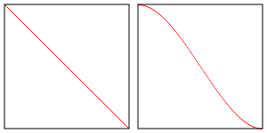

Эта статья продолжает точечное освещение в WebGL. Если вы ещё не читали её, советую начать с неё.
В последней статье мы рассмотрели точечное освещение, где для каждой точки поверхности объекта рассчитывалось направление от источника света до данной точки поверхности. Дальнейший расчёт был таким же, как и в направленном освещении, а именно находилось скалярное произведение нормали поверхности (т.е. направления поверхности) и направления освещения. В результате получалось значение 1, если направления совпадали и освещение было максимальным, значение 0, если два направления были перпендикулярными, и, наконец, значение -1 было в том случае, когда вектора были направлены в разные стороны. Данное значение мы использовали как множитель цвета поверхности, что в результате давало нам освещение.
В освещении прожектора совсем небольшое отличие. На самом деле, учитывая ваши накопленные знания, при желании вы сможете придумать свою реализацию данного освещения.
Представьте точку света, от которой свет идёт во все стороны. Для создания прожектора нам необходимо лишь выбрать направление от точки освещения - это будет направление прожектора. Затем для каждого луча мы могли бы получить скалярное произведение между направлением луча и выбранным направлением прожектора. Полученное значение мы можем сравнить с некоторой выбранной величиной, которая отрезает свет. Если мы вышли за пределы этой величины - освещения нет.
В диаграмме выше вы можете видеть свет вместе с лучами, идущими во всех направлениях, а также значение скалярного произведения для каждого луча. Также у нас есть определённое направление освещения (direction) и предел освещения (limit). Для данного предела освещения мы находим его косинус. Если скалярное произведение нашего выбранного направления освещения и отдельного луча выше значения косинуса предела, то данный луч участвует в освещении. В другом случае луч ничего не освещает.
Объясню по-другому. Скажем, наш предел равен 20 градусам. Мы можем преобразовать значение в радианы, а затем в диапазон от -1 до 1 через косинус. Назовём это скалярным пространством. Вот небольшая таблица для некоторых значений пределов:
пределы в
градусах| радианах| скалярном пространстве
--------+---------+----------
0 | 0.0 | 1.0
22 | .38 | .93
45 | .79 | .71
67 | 1.17 | .39
90 | 1.57 | 0.0
180 | 3.14 | -1.0
Далее мы просто сравниваем с полученным пределом:
dotFromDirection = dot(surfaceToLight, -lightDirection)
if (dotFromDirection >= limitInDotSpace) {
// освещение есть
}
Теперь можно перейти к реализации.
Сначала изменим фрагментный шейдер из последней статьи.
precision mediump float;
// Передаётся из вершинного шейдера
varying vec3 v_normal;
varying vec3 v_surfaceToLight;
varying vec3 v_surfaceToView;
uniform vec4 u_color;
uniform float u_shininess;
+uniform vec3 u_lightDirection;
+uniform float u_limit; // в скалярном пространстве
void main() {
// v_normal - это varying-переменная, которая интерполируется
// и поэтому не будет единичным вектором. Нормализуем
// переменную и получаем единичный вектор.
vec3 normal = normalize(v_normal);
vec3 surfaceToLightDirection = normalize(v_surfaceToLight);
vec3 surfaceToViewDirection = normalize(v_surfaceToView);
vec3 halfVector = normalize(surfaceToLightDirection + surfaceToViewDirection);
- float light = dot(normal, surfaceToLightDirection);
+ float light = 0.0;
float specular = 0.0;
+ float dotFromDirection = dot(surfaceToLightDirection,
+ -u_lightDirection);
+ if (dotFromDirection >= u_limit) {
* light = dot(normal, surfaceToLightDirection);
* if (light > 0.0) {
* specular = pow(dot(normal, halfVector), u_shininess);
* }
+ }
gl_FragColor = u_color;
// Умножаем только значение цвета (без прозрачности)
// на значение света
gl_FragColor.rgb *= light;
// Просто добавляем блики
gl_FragColor.rgb += specular;
}
Само собой нам необходимо получить ссылки на uniform-переменные, которые мы только что добавили
var lightDirection = [?, ?, ?];
var limit = degToRad(20);
...
var lightDirectionLocation = gl.getUniformLocation(program, "u_lightDirection");
var limitLocation = gl.getUniformLocation(program, "u_limit");
и установить им значения
gl.uniform3fv(lightDirectionLocation, lightDirection);
gl.uniform1f(limitLocation, Math.cos(limit));
Получаем такой результат:
Обращу внимание на несколько моментов. Во-первых, мы инвертируем
u_lightDirection, чтобы оба вектора были направлены в одну
сторону при их совпадении. Это означает, что нам нужно сравнить
surfaceToLightDirection с инвертированным направлением прожектора.
Это не единственный способ. Мы могли бы, например, передать обратное
направление при установке uniform-переменной. Этот способ был бы
на первом месте в моём личном хит-параде, но я подумал, что
uniform-переменная с именем u_lightDirection будет более понятной
по сравнению с u_reverseLightDirection и u_negativeLightDirection.
Во-вторых, по возможности я стараюсь избегать условий в шейдерах, хотя, возможно, это только моё предпочтение. Думаю, причиной тому отчасти является тот факт, что раньше в шейдерах не было условий. Если вы добавляли условие, компилятор шейдеров расширял код, добавляя повсюду множество умножений на 0 и 1, чтобы в итоге обойтись без условий. То есть добавление условий в прошлом вело за собой сильное расширение кода. Не знаю, осталось ли так по сей день, но в любом случае давайте избавимся от условий - хотя бы для того, чтобы показать возможные варианты. А вы уже сами сможете решить, использовать их или нет.
У нас есть функция на GLSL под названием step. Она принимает 2 значения, и
если второе значение больше или равно первому значению, функция возвращает 1.0,
в противном случае возвращается 0. В JavaScript она бы выглядела примерно так:
function step(a, b) {
if (b >= a) {
return 1;
} else {
return 0;
}
}
Давайте переделаем функцию step и избавимся от условий.
float dotFromDirection = dot(surfaceToLightDirection,
-u_lightDirection);
// inLight примет значение 1, когда мы внутри прожектора, и значение 0 за его пределами
float inLight = step(u_limit, dotFromDirection);
float light = inLight * dot(normal, surfaceToLightDirection);
float specular = inLight * pow(dot(normal, halfVector), u_shininess);
Как видите, визуально ничего не изменилось:
Вот только луч от прожектора у нас получился очень уж резкий. Внутри кольца у нас светлое пятно, а за границей света сразу идёт чернота.
Для исправления ситуации мы могли бы использовать два предела вместо одного - внутренний и внешний предел. В границах внутреннего предела мы будем использовать значение 1.0, за рамками внешнего предела будет значение 0.0. А между пределами значение будет плавно затухать от единицы до нуля.
Следующий код вполне справится с данной задачей
-uniform float u_limit; // в скалярном пространстве
+uniform float u_innerLimit; // в скалярном пространстве
+uniform float u_outerLimit; // в скалярном пространстве
...
float dotFromDirection = dot(surfaceToLightDirection,
-u_lightDirection);
- float inLight = step(u_limit, dotFromDirection);
+ float limitRange = u_innerLimit - u_outerLimit;
+ float inLight = clamp((dotFromDirection - u_outerLimit) / limitRange, 0.0, 1.0);
float light = inLight * dot(normal, surfaceToLightDirection);
float specular = inLight * pow(dot(normal, halfVector), u_shininess);
И да, это сработало как нужно
Теперь мы получили то, что действительно похоже на свет прожектора!
Следует помнить, что в случае, когда значение u_innerLimit равно
u_outerLimit, значение limitRange будет равно нулю. Тогда при делении
на limitRange мы получим деление на ноль. В шейдере делать ничего не нужно,
просто нужно контролировать в JavaScript, что u_innerLimit никогда не
будет равен u_outerLimit (в нашем примере это не реализовано).
В GLSL есть функция, которая позволит ещё немного упростить наш код.
Она называется smoothstep. Как и step, она возвращает значение от 0
до 1, но принимает как нижнюю, так и верхнюю границу, и плавно переходит
между этими значениями.
smoothstep(lowerBound, upperBound, value)
Применим эту функцию
float dotFromDirection = dot(surfaceToLightDirection,
-u_lightDirection);
- float limitRange = u_innerLimit - u_outerLimit;
- float inLight = clamp((dotFromDirection - u_outerLimit) / limitRange, 0.0, 1.0);
float inLight = smoothstep(u_outerLimit, u_innerLimit, dotFromDirection);
float light = inLight * dot(normal, surfaceToLightDirection);
float specular = inLight * pow(dot(normal, halfVector), u_shininess);
Как видим, всё отлично работает
Разница в том, что функция smoothstep использует эрмитову интерполяцию
вместо линейной интерполяции. Это значит, что между lowerBound и upperBound
значение будет интерполироваться, как показано на картинке справа, а изменение
значения линейной интерполяции отображено слева.

Насколько между ними большая разница - решайте сами.
Ещё один подводный камень состоит в том, что функция smoothstep вернёт
неопределённый результат при значении lowerBound большем или равном
значению upperBound. Немного выше мы уже сталкивались с проблемой, когда
оба значения равны. А случай, когда значение lowerBound становится больше
значения upperBound, является новой проблемой, и вам необходимо
контролировать, чтобы она не возникала при расчёте освещения прожектора.